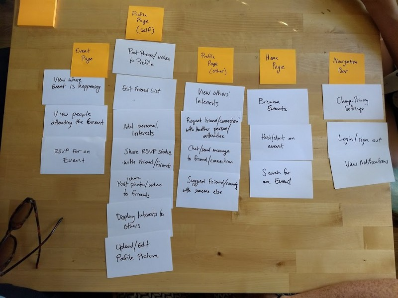
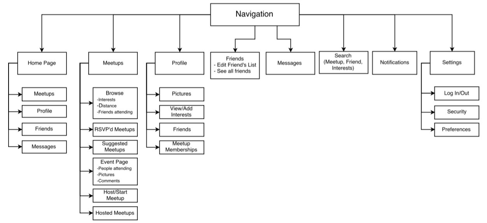

The Problem With Meeting on Meetup
As many people can attest, moving to a new area is a huge undertaking with many roadblocks, not least of which
is meeting new people. With the multitude of social platforms available today, Meetup has
taken the reins of encourging real-world interaction between like-minded people.
Meetup is great for finding events that pique one's interest, but after attending
a multitude of meetups, I found that meeting people is easy, but actually staying in contact
with people is extremely difficult on the platform.
I hypothesized that with improved social functions, Meetup could be a true social platform
that people can use to develop relationships, both professional and personal.
Project Planning: Research
Project Fit and Competitive Analysis
To discover if the product was viable, I surveyed 30 people between the existing platforms, Meetup, Facebook, LinkedIn, and Reddit. I discovered that many users found Facebook too personal to use when connecting with strangers, LinkedIn felt too formal for casual interactions, and Reddit too barebones to build trust. This leaves an opening in the market for a casual profile that displays social currency, but doesn't reveal too much personal information.
Personas, Empathy Maps, and User Flows
Who are the users?
I used the survey data to create three distinct personas which I wanted use to guide the direction of this project. They represent three archetypes of people who use Meetup: Professional Networkers, Socializers, and Skill Builders.
Each persona has unique motivations and personalities, which affect their goals and how they interact with the platform.

Card Sorts and Information Architecture
With the Personas developed, I could drill down on the specific features that would be most valuable to the platform, such as having a profile page, the ability to view related topics, and a method to initiate and sustain interpersonal interactions. Once I created a list of these features, I recruited 5 volunteers for a card sort and combined their answers to create a site layout.

Card Sort
Site Map
Prototyping and Testing
Using Sketch, InVision, and Photoshop, I created a navigable prototype out of medium-fidelity wireframes to test simple user interaction.
I instructed 5 users through various workflows such as finding a friend's interests, adding content to their page, and searching for events related to their own interests. I took notes on the participants mouse movements and, more imporantly, I had them explain their thought process as they interacted with the site.
High Fidelity Wireframes for Prototype
Takeaways and Further Reading
With research, I was able to determine that Meetup would benefit tremendously from more robust social features. Meeting is only the beginning of a relationship, but maintaining relationships require trust, communication, and shared experiences.
In order to promote users staying on the platform, all three of these requirements must be met.
This page is only summary of this project. To read an in-depth discussion about the project, please visit the article on Medium.com. You can view the prototype here.